Using SOLT to augment the keypoints (landmarks)
In this tutorial, we will shortly demonstrate how to use SOLT with the landmarks data. For that, we will use the Helen dataset: http://www.ifp.illinois.edu/~vuongle2/helen/
To run this notebook, please download annotations and test images, and place them into Data/helen_annotations and Data/helen_test_images respectively.
[4]:
%matplotlib inline
import numpy as np
import matplotlib.pyplot as plt
from matplotlib import patches
import cv2
import os
import glob
import json
np.random.seed(12345)
[5]:
import solt
import solt.transforms as slt
Loading and visualizing the image
[6]:
fname = '3238436027_1.jpg' # Let's just work with this particular image
img = cv2.imread(os.path.join('Data', 'helen_test_images', fname))
img = cv2.cvtColor(img, cv2.COLOR_BGR2RGB)
[7]:
kpts = None
for annotation_fname in glob.glob(os.path.join('Data', 'helen_annotations', '*.txt')):
with open(annotation_fname) as f:
if f.readline()[:-1] == fname.split('.')[0]:
ktps = []
for l in f:
tmp = l.split()
ktps.append([float(tmp[0]), float(tmp[2])])
break
kpts = np.array(ktps)
[8]:
fig = plt.figure(figsize=(7, 7))
ax = fig.add_subplot(1,1,1)
ax.imshow(img)
for k in kpts:
ax.add_patch(patches.Circle(k, radius=2, color='r'))
plt.show()
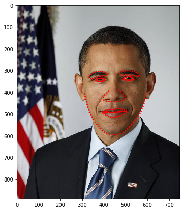
Wrapping the data into SOLT format
[10]:
# Let's first wrap our keypoints into a keypoints container
kpts_wrapped = solt.Keypoints(kpts, img.shape[0], img.shape[1])
# Then, we should wrap the image and the created keypoints into a DataContainer
dc = solt.DataContainer((img, kpts_wrapped), 'IP')
Defining a simple stream and testing it
[14]:
stream = solt.Stream([
slt.Rotate(angle_range=(-20, 20), p=1),
slt.Crop(512, crop_mode='r')
])
print(stream.to_yaml())
stream:
interpolation: null
optimize_stack: false
padding: null
transforms:
- rotate:
angle_range:
- -20
- 20
ignore_state: true
interpolation:
- bilinear
- inherit
p: 1
padding:
- z
- inherit
- crop:
crop_mode: r
[15]:
for i in range(10):
res = stream(dc, return_torch=False)
img_res, kp_res = res.data
fig = plt.figure(figsize=(5, 5))
ax = fig.add_subplot(1,1,1)
ax.imshow(img_res)
for k in kp_res.data:
ax.add_patch(patches.Circle(k, radius=2, color='r'))
plt.show()
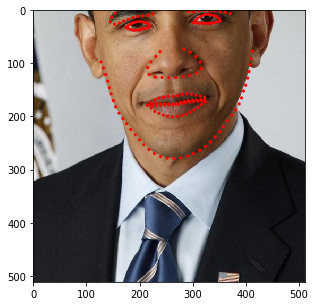
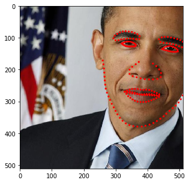
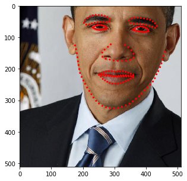
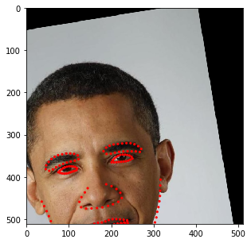
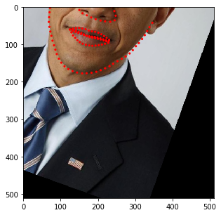
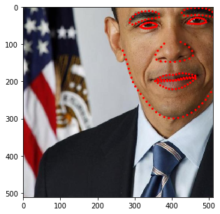
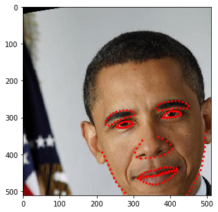
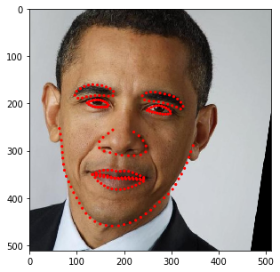
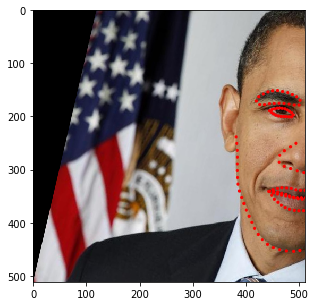
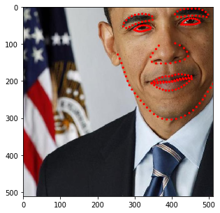
You may have noticed that the image size changes depending on the rotation angle. In fact, at this stage, we incorporated such behavior into SOLT. Let’s now define a more complicated pipeline.
[17]:
stream = solt.Stream([
slt.Projection(
solt.Stream([
slt.Scale(range_x=(0.5, 1.3), p=1),
slt.Rotate(angle_range=(-90, 90), p=1),
slt.Shear(range_x=(-0.5, 0.5), range_y=None, p=1),
]),
v_range=(1e-6, 9e-4)),
slt.GammaCorrection(p=0.5, gamma_range=(0.5, 3)),
solt.SelectiveStream([
slt.Blur(p=0.5, blur_type='g', k_size=(11, 21, 31), gaussian_sigma=(1, 10)),
slt.Blur(p=0.5, blur_type='m', k_size=(11, 21, 31)),
]),
solt.SelectiveStream([
slt.SaltAndPepper(p=1),
slt.Noise(p=1)
]),
solt.SelectiveStream([
slt.Blur(p=0.5, blur_type='g', k_size=(11, 21, 31), gaussian_sigma=(1, 10)),
slt.Blur(p=0.5, blur_type='m', k_size=(11, 21, 31)),
]),
slt.Pad(600, 'z'),
slt.Crop(600, crop_mode='c'),
slt.Crop(512, crop_mode='r')
])
print(stream.to_yaml())
stream:
interpolation: null
optimize_stack: false
padding: null
transforms:
- projection:
affine_transforms:
stream:
interpolation: null
optimize_stack: false
padding: null
transforms:
- scale:
ignore_state: true
interpolation:
- bilinear
- inherit
p: 1
range_x:
- 0.5
- 1.3
range_y: null
same: true
- rotate:
angle_range:
- -90
- 90
ignore_state: true
interpolation:
- bilinear
- inherit
p: 1
padding:
- z
- inherit
- shear:
ignore_state: true
interpolation:
- bilinear
- inherit
p: 1
padding:
- z
- inherit
range_x:
- -0.5
- 0.5
range_y:
- 0
- 0
ignore_state: true
interpolation:
- bilinear
- inherit
p: 0.5
padding:
- z
- inherit
- gamma_correction:
data_indices: null
gamma_range:
- 0.5
- 3
p: 0.5
- stream:
n: 1
optimize_stack: false
probs: null
transforms:
- blur:
data_indices: null
gaussian_sigma: &id002
- 1
- 10
k_size: &id001
- 11
- 21
- 31
p: 0.5
- blur:
data_indices: null
gaussian_sigma: &id003
- 1
- 1
k_size: *id001
p: 0.5
- stream:
n: 1
optimize_stack: false
probs: null
transforms:
- salt_and_pepper:
data_indices: null
gain_range:
- 0
- 0.1
p: 1
salt_p:
- 0.5
- 0.5
- noise:
data_indices: null
gain_range:
- 0
- 0.1
p: 1
- stream:
n: 1
optimize_stack: false
probs: null
transforms:
- blur:
data_indices: null
gaussian_sigma: *id002
k_size: *id001
p: 0.5
- blur:
data_indices: null
gaussian_sigma: *id003
k_size: *id001
p: 0.5
- pad:
pad_to:
- 600
- 600
padding:
- z
- inherit
- crop:
crop_mode: c
- crop:
crop_mode: r
[18]:
for i in range(10):
res = stream(dc, return_torch=False)
img_res, kp_res = res.data
fig = plt.figure(figsize=(5, 5))
ax = fig.add_subplot(1,1,1)
ax.imshow(img_res)
for k in kp_res.data:
ax.add_patch(patches.Circle(k, radius=4, color='r'))
plt.show()
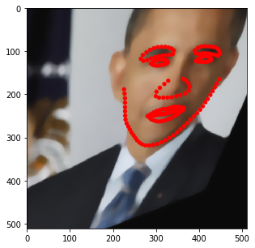
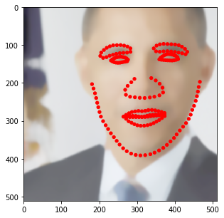
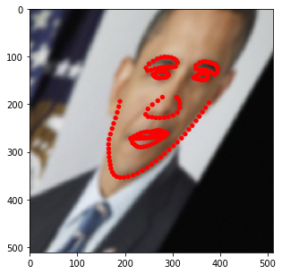
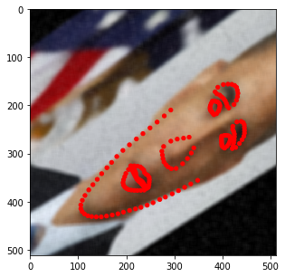
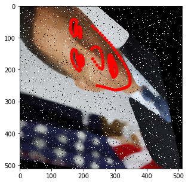
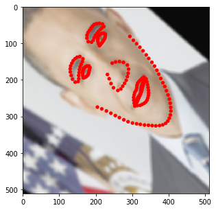
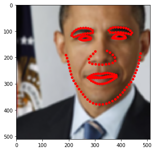
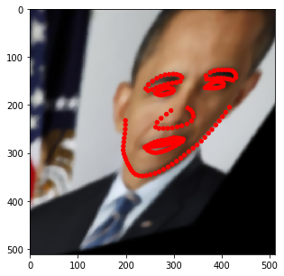
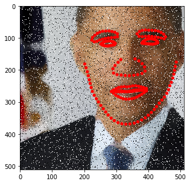
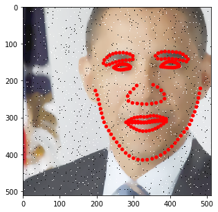